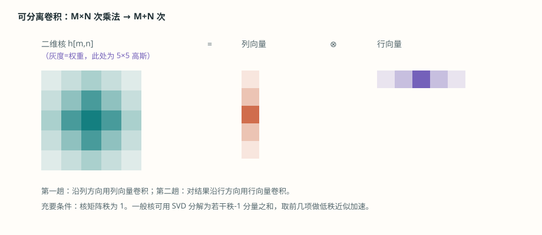
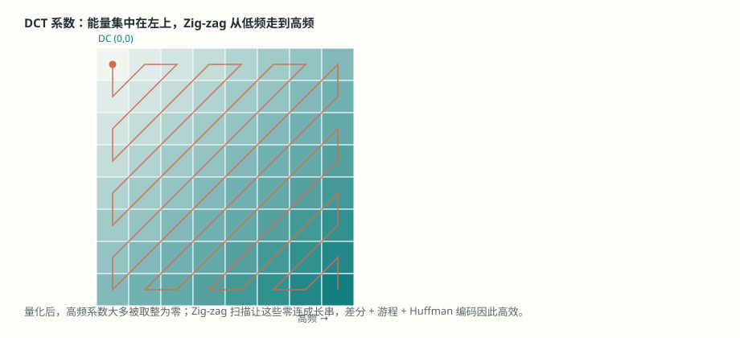
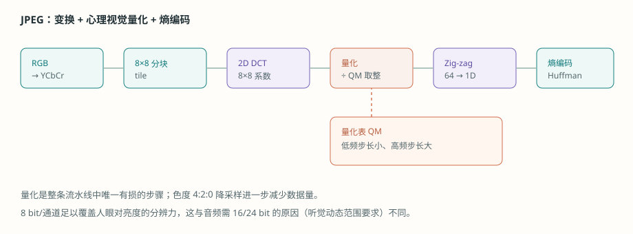

Applications · Imaging / 25
图像信号处理：从二维卷积到 JPEG 与 ISP
图像把信号从一维时间轴扩展到二维空间网格。多出来的不只是“第二个方向”：空间频率、方向性梯度、各向异性都成为新的设计维度。
从一维到二维
一张灰度图像是一个二维离散信号 f[m,n]：m 为行（高度方向），n 为列（宽度方向），取值通常为 0–255。彩色图像由多个通道（RGB 或 YCbCr）组成，可看作多张二维信号叠加。
采样与量化的概念从一维直接沿用：空间采样由像素间距决定空间分辨率，空间频率超过 Nyquist 极限会出现莫尔纹；幅度量化常用 8 bit/通道，10 bit 用于 HDR，12–14 bit 用于 RAW。
2D 卷积与可分离卷积
图像滤波就是选择不同的二维卷积核。二维卷积定义为一对求和：
式（1）：h[i,j] 为卷积核（掩模）。边界外的像素按选定填充方式处理（零填充、复制或镜像）。
| 操作 | 3×3 核 | 效果 |
|---|---|---|
| 均值滤波 | 全 1 / 9 | 平滑去噪，但模糊边缘 |
| 高斯滤波 | [1,2,1;2,4,2;1,2,1] / 16 | 加权平滑，保留边缘更好 |
| Sobel 水平边缘 | [−1,0,1; −2,0,2; −1,0,1] | 水平梯度，检测竖直边缘 |
| 拉普拉斯 | [0,−1,0; −1,4,−1; 0,−1,0] | 二阶差分，边缘增强 |

h[m,n]=h₁[m]·h₂[n]（等价于核矩阵秩为 1）时，2D 卷积分解为两趟一维卷积，每次输出的乘法数从 M×N 降为 M+N。例程验证了秩-1 高斯核下直接型与可分离型逐点相等（误差 < 1e-9）。乘法数对比：3×3 核从 9 降到 6（提升有限），11×11 高斯核从 121 降到 22（约 5.5 倍）。因此大核滤波几乎都用可分离实现。一般核的秩不为 1 时，可用 SVD 分解为若干秩-1 分量之和，取前几项做低秩近似。
2D DFT 与 DCT
二维 DFT 把一维变换分别作用到行与列上：
式（2）：k、l 分别为水平与垂直空间频率索引。自然图像的能量集中在低频（左上角），高频对应边缘、纹理与噪声。

JPEG 用的是 DCT 而不是 DFT，理由有两点：DCT 是实数变换（无虚部，量化与实现更简单）；且 DCT 对块边界的周期性跳变更少，能量压缩性更强——典型 8×8 块的大部分能量集中在少数低阶系数上。
JPEG 压缩流水线
JPEG 把“变换 + 心理视觉量化 + 熵编码”串成一条流水线，把图像的大部分信息量集中在少数系数上后再压缩。

式（3）：QM 为量化矩阵，低频区域步长小、高频区域步长大。量化不可逆，但配合 Zig-zag 与熵编码能把残差压得很小。
需要区分的是：JPEG 的“质量因子 Q”与主观质量是非线性、内容相关的。同一 Q 值下，平坦渐变区域容易出现块效应与振铃，而精细纹理区域可能看起来尚可。因此对内容差异大的图像，工程上常用自适应量化（按局部纹理选择不同量化精度），而非固定一张量化表。
边缘检测
从信号角度，边缘就是图像强度函数的局部不连续点，即梯度较大的位置。
- Sobel（一阶梯度）：分别用两个 3×3 核得到水平梯度
Gₓ与垂直梯度Gᵧ，幅值G=√(Gₓ²+Gᵧ²)。核的中心加权带来轻微平滑与噪声抑制，但边缘定位偏粗。例程验证了竖直边缘只激发Gₓ（内部 |Gₓ|=400、Gᵧ=0）。 - LoG（二阶过零）：先用高斯核平滑，再取拉普拉斯响应的过零点作为边缘，不需设定梯度阈值；但对孤立噪声点敏感，高斯尺度需人工选择。
- Canny：多级级联：高斯平滑 → Sobel 梯度 → 非极大值抑制（把粗边缘细化到单像素宽）→ 双阈值分类 → 滞后跟踪（只保留与强边缘相连的弱边缘）。其设计的三个准则是好的检测率、高的定位精度与单响应。
ISP 图像信号管线
CMOS 传感器的 RAW 输出距离一张“能看的照片”还差一整套处理，这就是 ISP 管线——嵌入式 DSP 在图像领域最大的应用场景，几乎所有手机 SoC 都带一块专用 ISP。
| 模块 | 作用 | 对应的 DSP 概念 |
|---|---|---|
| 去马赛克 | Bayer 阵列每像素只有一个通道，插值恢复三通道 | 多通道二维插值 |
| 白平衡 | 估计色温并调整 R/B 增益使白色 R=G=B | 通道增益估计 |
| 去噪 | 平滑噪声同时保护边缘 | 二维自适应滤波（如双边滤波） |
| 颜色校正 | 传感器色彩空间 → sRGB | 3×3 矩阵 |
| Gamma 校正 | 线性光强 → 显示器非线性响应（≈2.2） | 非线性整流 |
| 锐化 | Unsharp Mask：原图减低频模糊后按比例加回 | 高通增强 |
双边滤波是其中最具代表性的二维自适应滤波：权重同时取决于空间距离与灰度差，因此能在平滑噪声的同时保留边缘。它本质上仍是“可分离高斯”的推广，只是权重多了一项值域核。
交互：DCT 能量压缩
对一个确定的 8×8 灰度块做正交二维 DCT-II，按 Zig-zag 顺序累计能量。拖动滑块改变保留的系数个数 k：曲线是累积能量占比，当前点标出保留前 k 个系数时的能量。
动手验证：保留多少个 DCT 系数
交互仅辅助观察；式（2）与确定性程序在 JS 关闭时仍可独立理解。
完整可执行例程（25_image.py）：断言可分离卷积与直接二维卷积逐点相等（误差 < 1e-9），正交 DCT 的能量守恒，平滑块前 10 个系数保留 > 95% 能量，Zig-zag 恰覆盖 64 个系数，以及 Sobel 对竖直边缘的响应。
边界与失效模式
- 可分离条件：只有秩为 1 的核能完全分离；近似分离会引入误差，需核对上限。
- 块效应：JPEG 在块边界产生不连续（块效应）与振铃，高压缩比下尤其在平坦渐变区明显。
- 色度降采样：4:2:0 对色度损失信息，强彩色边缘可能出现色度伪影。
- 边界填充：卷积的边界填充方式会改变边缘附近结果，需与参考实现一致。
- LoG 噪声敏感：二阶导放大噪声，孤立噪点会产生虚假过零点。
- ISP 顺序耦合：去噪/锐化/色调的先后顺序影响最终观感，需联合调参而非逐块最优化。
自检：为何大核高斯滤波要用可分离实现？JPEG 中哪一步有损？Sobel 与 LoG 在“边缘定位”与“噪声敏感”上各有什么代价？
参考资料
- ITU-T T.81 / ISO 10918-1 · JPEG 标准：颜色转换、DCT、量化表与 Zig-zag 扫描的规范定义。
- J. Canny (1986) · A Computational Approach to Edge Detection：Canny 边缘检测器与最优检测准则。
- D. Marr & E. Hildreth (1980) · Theory of Edge Detection：LoG 过零边缘检测的理论基础。